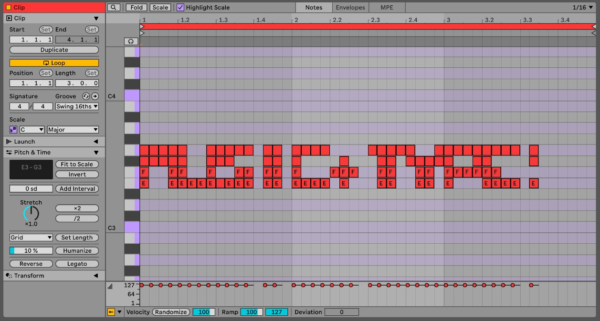

01 / CONCEPTWHAT IS BITYPE?
It's a typeface system built from just two shapes/glyphs. Instead of drawing letters by hand, every letter, number, and punctuation mark is created by arranging these two shapes inside a 4×4 grid of 16 cells.
Each cell is either filled [1] (with your first shape) or empty [0] (showing your second shape). This filled-or-empty pattern creates the letter. The system makes data visible—your letters are essentially binary code made readable. But still... Only for those who know ;)
02 / GRAPHICAL MAP MATHGRID CODE SCHEMATIC
The math behind BiType relies on mapping a 16-bit array to a 4x4 spatial layout. Index 0 starts at the top-left, wrapping to the right, and ending at index 15 at the bottom-right. Active cells (1) draw stem bars; inactive cells (0) draw circular rings.
03 / THREE IN ONETHE TRIPLE NATURE OF THE NAME
- Bi = 2 (Binary Code): Drawn solely using 1s and 0s.
- Bi = 2 (2x2 Grid Blocks): A 4x4 grid is mathematically equivalent to four 2x2 grid blocks aligned together.
- Bi = 2 (Dual Typography Layers): The letterform is built directly FROM typography (the 1s and 0s characters/shapes). You are always seeing and using two font layers at the exact same time.
04 / CONTEXT & HYPOTHESISDATA EXPOSURE & SURVEILLANCE
BiType was born in 2026 to make a point about how much we are being watched online. If all the hidden tracking cookies and data logs were drawn right on your face, would you notice them?
"If data collection were made visible through your own image, would you recognise yourself as a tracked entity?"
Every click you make is tracked and cataloged. BiType plays with this idea: what looks like random blocks or digital noise is actually a secret message. Once you know how to read the 4x4 grid, it's super easy to decode. It's hidden in plain sight!
05 / THE NO-DOWNLOAD CLAIMTHE GRID IS THE FONT
The first font you don't need to download! You can write it in apps and websites where you can only use text or simple images like Instagram, and you can encrypt messages. (Also, you can copy and paste it directly from the Creator tab!)
06 / MORE FUN USES FOR BITTYPEDAW MIDI TRANSLATION
Did you know you can play BiType like an instrument? By mapping the 4x4 grids of letters to MIDI notes, you can feed text directly into hardware synths and DAWs (music production software).
Each solid cell (1) triggers a note, while empty cells (0) act as rests. Type a message, and it instantly plays back as a crazy chord progression or beat! Check out how we mapped the characters in our setup below:

07 / POSTER INSTALLATIONENDCORE speculative campus project
For the ENDCORE project, I pasted custom posters all over campus to get people talking about privacy. Inspired by old-school "If you're reading this, it's too late" letters, the posters are warnings hidden in plain sight. I even made a poster using an ASCII-art selfie to show how tech companies turn our private photos into raw data grids.
08 / ABOUT THE CREATORABOUT ME

I am Jan A. Wojta, an 18 year old multidisciplinary artist. Born and raised in Barcelona with Polish nationality currently studying at LCI Barcelona in Spain. This is my first time building a web app, and I love to experiment with all kinds of creative mediums!
BiType is a fun project about hiding messages in plain sight. It combines my love for design, deep search, and community participation. I love experimenting, like using code to make art, ask questions, and think about how we share our lives online.
Big thanks to my friend Theo, this project wouldn't have been possible without your Claude membership!
Check out my other work!
Instagram: @janaleksanderwojtas
09 / CREDITA-TYPOGRAPHY
Credit goes to the conceptual and formal inspirations from A-Typography. Explore their typographic experiments below:
10 / PROCESSPRODUCTION PROCESS
The development of the BiType design system and web application followed a structured workflow translating conceptual sketches into a fully functional digital tool:
- Sketchbook: Initial conceptualization and grid drafts.
- Figma: Visual interface design and component layout.
- Claude: Coding structural logic, SVG exporters, and web interface elements.
- Antigravity AI: Refinement of the TTF custom compiler, visual overhauls, loading optimization, and GPU animation binding.
- GitHub: Version control and repository management.
- Vercel: Production deployment and global hosting.